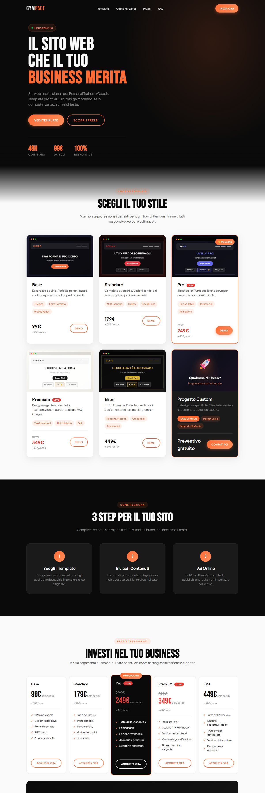
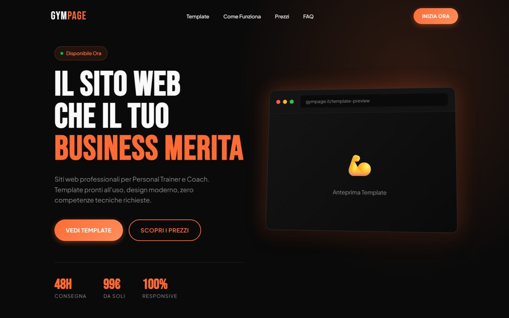
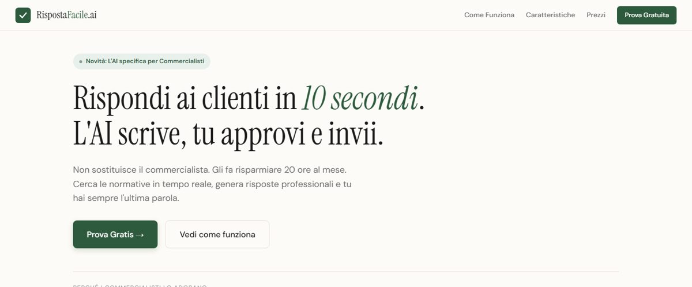
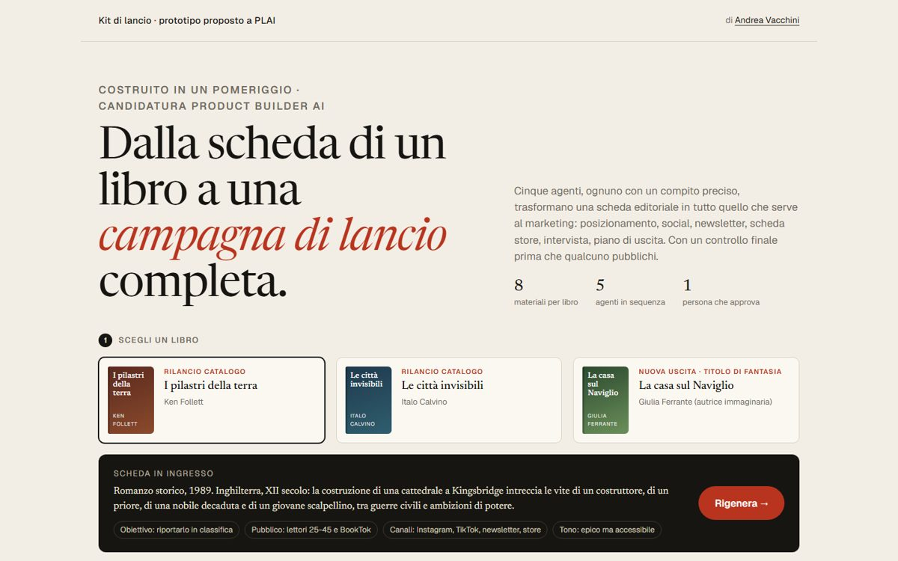
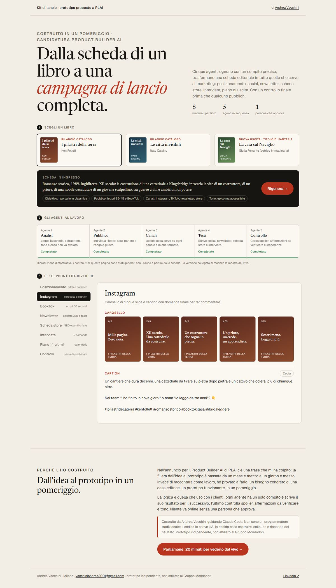
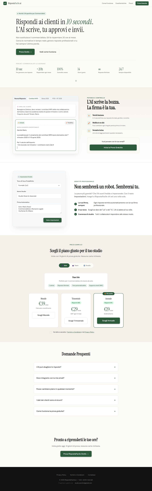

07/08
Palestre e personal trainer
GymPage
Una palestra ha bisogno di un sito chiaro, senza dover seguire un progetto web.
Siti pronti con servizi, orari, prezzi e contatti.
Onlinegympage.it ↗
Andrea Vacchini · AI Automation Specialist · Milano
Disponibile per ruoli e progetti
Guardo come lavorano le persone, trovo il passaggio che mangia ore e costruisco lo strumento che lo toglie. Il codice lo scrive l'IA sotto la mia guida; io decido cosa costruire, collaudo su dati veri e lo metto in uso.



Il codice lo scrive l'IA. Le decisioni le prendo io.
Controllo fatture
4.000
coppie fattura-ordine collaudate prima della messa in uso
Studio
12
agenti IA, una persona che decide
Trading Lab
120+
bot costruiti e testati
IT
6 anni
di infrastruttura, reti, Microsoft 365 e help desk
Strumenti veri: in uso, online o da provare.

01/08
Editoria · costruito in un pomeriggio
Per lanciare un libro servono tanti materiali diversi, tutti coerenti con la stessa scheda.
5 agenti in sequenza trasformano la scheda di un libro in 8 materiali di campagna; l'ultimo controlla spoiler e tono, poi approva una persona.
Proposto a PLAI. Prototipo indipendente, non affiliato al Gruppo Mondadori.
| Fattura | Ordine | Esito |
|---|---|---|
| INV 2291 · € 1.240,00 | PO 8812 · € 1.240,00 | ok |
| INV 2292 · € 318,50 | PO 8820 · € 318,50 | ok |
| INV 2293 · € 96,00 | PO 8823 · € 90,00 | € 6,00 di differenza |
| INV 2294 · € 2.015,30 | PO 8831 · € 2.015,30 | ok |
02/08
Struttura ospedaliera vicino a Milano
Chi liquida le fatture doveva confrontare a mano ogni fattura elettronica con il suo ordine.
Abbina fatture e ordini in automatico e mostra solo le differenze da guardare. Funziona offline. Collaudato su 4.000 coppie.

03/08
Studi commercialisti
I clienti fanno al commercialista le stesse domande tutto il giorno.
Prepara la bozza di risposta; il commercialista la legge, la corregge se serve e la invia.
04/08
Il mio studio · agenti IA
Da solo devo seguire vendite, progetti, conti, qualità e ricerca, senza perdere il filo delle decisioni.
12 agenti con ruoli precisi preparano proposte, bozze e controlli e scrivono tutto: schede progetto, registro delle decisioni, ricerca. Decido io; niente esce senza il mio sì.
05/08
Ricerca · sistemi automatici
Nel trading automatico è facile ingannarsi: un test che "vede" dati del futuro fa sembrare buona qualsiasi strategia.
Un laboratorio di ricerca con controllo anti-lookahead. Oltre 120 bot costruiti e testati: trend following, multi-timeframe, mean reversion, reinforcement learning. Monitoraggio con riconnessione automatica e un parser LLM che legge i segnali da Telegram.
06/08
Automazione commerciale
Trovare a mano le attività locali che hanno bisogno di un sito richiede ore di ricerca.
Cerca da fonti pubbliche attività locali (parrucchieri, palestre) senza sito o con un sito vecchio, le qualifica e prepara una bozza del sito e del messaggio di contatto. Oltre 2.800 attività nel database. Il messaggio lo rivedo e lo mando io.

07/08
Palestre e personal trainer
Una palestra ha bisogno di un sito chiaro, senza dover seguire un progetto web.
Siti pronti con servizi, orari, prezzi e contatti.
08/08
Il mio studio · Obsidian
Un vault Obsidian che tiene insieme progetti, clienti, decisioni, riunioni e ricerca, collegati tra loro, con mappe visuali dello studio e del trading lab.
È la memoria da cui lavorano gli agenti. Con questo sistema ho scelto le offerte di lavoro a cui candidarmi.
$ ls ~/progetti
Raccoglie offerte da API pubbliche di annunci e le ordina rispetto a un profilo. Provato anche su profili non tecnici.
App desktop per Windows che trova i dispositivi in rete e aiuta a gestire subnet e indirizzi IP.
Un'app che raccoglie e avvia tutti i miei progetti da un'unica finestra.
$ cat metodo.txt
Mi faccio mostrare il lavoro da chi lo fa ogni giorno, non solo da chi lo descrive.
Una prima versione da provare su dati veri, poi la rifinisco con chi la usa.
Prima di metterla in uso la provo sui casi veri, compresi quelli scomodi.
Dopo la consegna sono ancora io la persona da chiamare quando qualcosa cambia.
Non scrivo codice a mano. Costruisco guidando Claude Code e Gemini: scelgo il problema, descrivo cosa serve, leggo i risultati e collaudo. Rispondo io di quello che va in uso. Nei sistemi che costruisco l'IA prepara, una persona approva.
Vengo dall'IT: sei anni a far funzionare reti, server e Microsoft 365 per persone che hanno altro da fare. Da lì ho imparato a guardare un processo e a capire dove si perde tempo. Oggi uso l'IA per togliere quel tempo perso.
Studio Vacchini · freelance. Automazioni con IA, strumenti su misura e siti per piccole attività.
Infrastruttura IT per catene di ristorazione in tutta Italia.
Fibra FTTH. Microsoft 365 e formazione degli utenti. SQL e help desk.
$ contact --andrea
Se cerchi qualcuno che porti l'IA nei processi della tua azienda, o hai un'attività con un lavoro ripetitivo da togliere, scrivimi o chiamami.